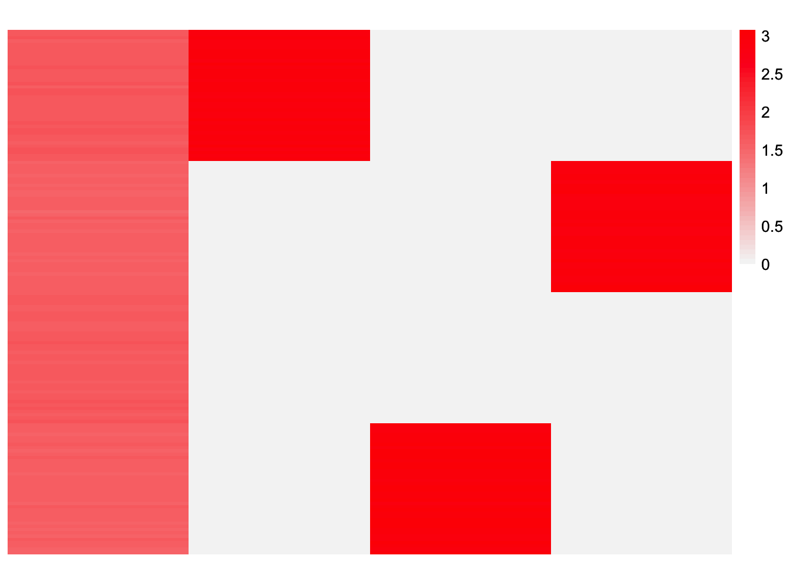
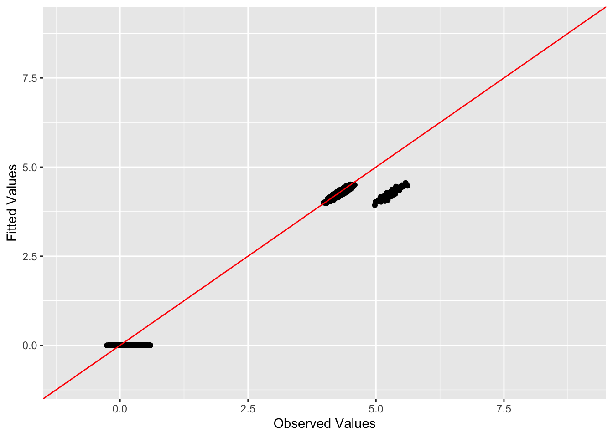

balanced_nonoverlapping_flash_normalf
Annie Xie
2025-02-04
Last updated: 2025-02-25
Checks: 7 0
Knit directory: covariance_decomps_dsc/
This reproducible R Markdown analysis was created with workflowr (version 1.7.1). The Checks tab describes the reproducibility checks that were applied when the results were created. The Past versions tab lists the development history.
Great! Since the R Markdown file has been committed to the Git repository, you know the exact version of the code that produced these results.
Great job! The global environment was empty. Objects defined in the global environment can affect the analysis in your R Markdown file in unknown ways. For reproduciblity it’s best to always run the code in an empty environment.
The command set.seed(20250203) was run prior to running
the code in the R Markdown file. Setting a seed ensures that any results
that rely on randomness, e.g. subsampling or permutations, are
reproducible.
Great job! Recording the operating system, R version, and package versions is critical for reproducibility.
Nice! There were no cached chunks for this analysis, so you can be confident that you successfully produced the results during this run.
Great job! Using relative paths to the files within your workflowr project makes it easier to run your code on other machines.
Great! You are using Git for version control. Tracking code development and connecting the code version to the results is critical for reproducibility.
The results in this page were generated with repository version 550a1a7. See the Past versions tab to see a history of the changes made to the R Markdown and HTML files.
Note that you need to be careful to ensure that all relevant files for
the analysis have been committed to Git prior to generating the results
(you can use wflow_publish or
wflow_git_commit). workflowr only checks the R Markdown
file, but you know if there are other scripts or data files that it
depends on. Below is the status of the Git repository when the results
were generated:
Ignored files:
Ignored: .DS_Store
Ignored: .Rhistory
Ignored: data/.DS_Store
Note that any generated files, e.g. HTML, png, CSS, etc., are not included in this status report because it is ok for generated content to have uncommitted changes.
These are the previous versions of the repository in which changes were
made to the R Markdown
(analysis/balanced_nonoverlapping_flash_normalf.Rmd) and
HTML (docs/balanced_nonoverlapping_flash_normalf.html)
files. If you’ve configured a remote Git repository (see
?wflow_git_remote), click on the hyperlinks in the table
below to view the files as they were in that past version.
| File | Version | Author | Date | Message |
|---|---|---|---|---|
| Rmd | 550a1a7 | Annie Xie | 2025-02-25 | Update analysis of flash with normal f in balanced nonoverlapping setting |
| html | 47eb362 | Annie Xie | 2025-02-15 | Build site. |
| Rmd | 31d7e8d | Annie Xie | 2025-02-15 | Update ebmfcov and flash with normal F analyses |
| html | d92f1f9 | Annie Xie | 2025-02-13 | Build site. |
| Rmd | e78661e | Annie Xie | 2025-02-13 | Add analysis of flash with normal F on bal. nonoverlap |
Introduction
In this analysis, we are exploring EBMF with a normal prior on F in the balanced, nonoverlapping setting.
library(dplyr)
library(ggplot2)
library(pheatmap)
library(flashier)source('code/visualization_functions.R')compute_L2_fit <- function(est, dat, with_diag = FALSE){
if (with_diag == FALSE){
score <- sum((dat - est)^2) - sum((diag(dat) - diag(est))^2)
}
else{
score <- sum((dat - est)^2)
}
return(score)
}Flash with Normal Prior on F (with backfitting)
group_nonoverlap_1 <- readRDS("data/group_nonoverlap_1.rds")
group_nonoverlap_1_flash_normalf_1 <- readRDS("data/group_nonoverlap_1_flash_normalf_1.rds")Visualization of Estimate
This is a heatmap of the true \(L\) that we are hoping to recover:
plot_heatmap(group_nonoverlap_1$true_L)
| Version | Author | Date |
|---|---|---|
| d92f1f9 | Annie Xie | 2025-02-13 |
This is a heatmap of \(\hat{L}\), the estimate for \(L\) from Flashier with normal prior on \(F\):
plot_heatmap(group_nonoverlap_1_flash_normalf_1$est_L, brks = seq(0, max(group_nonoverlap_1_flash_normalf_1$est_L), length.out = 50))
| Version | Author | Date |
|---|---|---|
| d92f1f9 | Annie Xie | 2025-02-13 |
This is a scatterplot of the entries of \(\hat{L}\):
pops_vec <- c(rep('A', 40), rep('B', 40), rep('C', 40), rep('D', 40))
plot_loadings(group_nonoverlap_1_flash_normalf_1$est_L, pops_vec)
| Version | Author | Date |
|---|---|---|
| d92f1f9 | Annie Xie | 2025-02-13 |
Visualizations related to fit
This is the true Gram matrix, \(\frac{1}{p}XX'\):
plot_heatmap(group_nonoverlap_1$data$YYt, colors = c('blue','gray96', 'red'), brks = seq(-max(abs(group_nonoverlap_1$data$YYt)), max(abs(group_nonoverlap_1$data$YYt)), length.out = 50))
| Version | Author | Date |
|---|---|---|
| d92f1f9 | Annie Xie | 2025-02-13 |
This is a heatmap of the estimate of the Gram matrix, \(\hat{L}\hat{L}'\):
plot_heatmap(group_nonoverlap_1_flash_normalf_1$est_LLt, brks = seq(0, max(group_nonoverlap_1_flash_normalf_1$est_LLt), length.out = 50))
| Version | Author | Date |
|---|---|---|
| d92f1f9 | Annie Xie | 2025-02-13 |
This is a scatter plot of the fitted values vs observed values:
ggplot(data = NULL, aes(x = c(group_nonoverlap_1$data$YYt), y = c(group_nonoverlap_1_flash_normalf_1$est_LLt))) + geom_point() + ylim(-1, 9) + xlim(-1,9) + xlab('Observed Values') + ylab('Fitted Values') + geom_abline(slope = 1, intercept = 0, color = 'red')Let’s focus on the off-diagonal elements:
diag_idx <- seq(1, prod(dim(group_nonoverlap_1$data$YYt)), length.out = ncol(group_nonoverlap_1$data$YYt))
off_diag_idx <- setdiff(c(1:prod(dim(group_nonoverlap_1$data$YYt))), diag_idx) ggplot(data = NULL, aes(x = c(group_nonoverlap_1$data$YYt)[off_diag_idx], y = c(group_nonoverlap_1_flash_normalf_1$est_LLt)[off_diag_idx])) + geom_point() + ylim(-1, 9) + xlim(-1,9) + xlab('Observed Values') + ylab('Fitted Values') + geom_abline(slope = 1, intercept = 0, color = 'red')As mentioned in other explorations, ideally this scatter plot would have two clusters – one cluster for the near-zero entries (corresponding to the sparse entries) and another cluster corresponding to the group effects. In this plot, we see that the fitted values corresponding to near-zero observed values range from 1-3., representing an elevated baseline. We have one cluster which falls on the y=x line; this seems to correspond to the group effect for group 3 (the group that was in the intercept factor). Lastly, we see a cluster with fitted values around 7.5-8; this corresponds to the group effect factors for the other groups.
This is the elbo of the flash fit:
group_nonoverlap_1_flash_normalf_1$fit_obj$elbo[1] -239447.3Observations
Similar to EBMFcov-greedy in this setting, Flashier with a normal prior on \(F\) seems to add something like an intercept factor. In the ``intercept” factor, the group effect for one group is more prominent than the others; samples from this group have a higher loading value than others. This could be due to the backfitting step; it’s possible that Flashier with a normal prior on \(F\) without backfitting would lead to an estimate similar to that of EBMFcov-greedy (this is something we check in a later section). Another thought is whether backfitting would make the intercept factor more sparse, turning it into a group effect factor.
This estimate of \(L\) doesn’t lead to the best estimate for the Gram matrix. Due to the intercept-like factor, the estimate for the Gram matrix is not sparse.
Try additional backfitting
flash_normalf_fit <- group_nonoverlap_1_flash_normalf_1$fit_obj
flash_normalf_fit %>%
flash_backfit(tol = 10^(-16), verbose = 3)Backfitting 4 factors (tolerance: 1.00e-16)...
Iteration Factor ELBO Diff LF Max Chg
1 all 6.71e-04 5.27e-06
2 all 9.22e-04 7.59e-06
3 all 1.04e-03 9.11e-06
4 all 1.13e-03 1.07e-05
5 all 1.23e-03 1.28e-05
6 all 1.35e-03 1.62e-05
7 all 1.47e-03 2.21e-05
8 all 1.38e-03 3.36e-05
9 all 3.48e-05 7.37e-07
10 all 6.18e-05 1.36e-06
11 all 8.95e-05 2.10e-06
12 all 1.24e-04 3.27e-06
13 all 1.67e-04 5.47e-06
14 all 1.77e-04 1.03e-05
15 all 1.22e-06 1.38e-07
16 all 2.28e-06 2.69e-07
17 all 3.48e-06 4.40e-07
18 all 5.06e-06 7.30e-07
19 all 6.85e-06 1.32e-06
20 all 4.70e-06 2.62e-06
21 all 2.07e-08 2.69e-08
22 all 3.97e-08 5.13e-08
23 all 5.40e-08 8.20e-08
24 all 6.89e-08 1.32e-07
25 all 6.41e-08 2.31e-07
26 all 8.73e-10 4.06e-09
27 all 1.46e-09 7.84e-09
28 all -7.28e-10 3.65e-09
Backfit complete. Objective: -239447.305
Wrapping up...
Done.Flash object with 4 factors.
Proportion of variance explained:
Factor 1: 0.305
Factor 2: 0.185
Factor 3: 0.191
Factor 4: 0.190
Variational lower bound: -239447.305Visualizations of Estimate
This is a heatmap of \(\hat{L}_{backfit}\), the estimate for \(L\):
plot_heatmap(flash_normalf_fit$L_pm, brks = seq(0, max(flash_normalf_fit$L_pm), length.out = 50))
| Version | Author | Date |
|---|---|---|
| d92f1f9 | Annie Xie | 2025-02-13 |
This is a scatterplot of the entries of \(\hat{L}_{backfit}\):
plot_loadings(group_nonoverlap_1_flash_normalf_1$est_L, pops_vec)This is the elbo:
flash_normalf_fit$elbo[1] -239447.3Observations
One thing I did was try increasing th number of maximum backfitting iterations. Increasing the number of maximum backfitting iterations does not change the estimate. (I checked the number of iterations afterwards and it only took 28 backfitting iterations to stop, so that makes sense). Another thing I tried was decreasing the tolerance level. This also does not change the estimate. Therefore, for this setting, we can eliminate the possibility that the backfitting is converging slowly.
For comparison, Flash with normal prior on F with no backfitting
flash_normalf_nobackfit.wrapper <- function(input, args){
Kmax <- input$K
flash_fit <- flash_init(data = input$Y, var_type = 0) %>%
flash_greedy(ebnm_fn = c(args$ebnm_fn, ebnm::ebnm_normal), Kmax = Kmax)
flash_ldf <- ldf(flash_fit, type = "f") # I think the default option is type = f
flash_scaled_L <- (1/sqrt(ncol(input$Y)))*flash_ldf$L %*% diag(flash_ldf$D)
return(list(flash_fit = flash_fit, est_LLt = tcrossprod(flash_scaled_L)))
}
flash_normalf_nobackfit_data <- flash_normalf_nobackfit.wrapper(group_nonoverlap_1$data, args = list(ebnm_fn = ebnm::ebnm_generalized_binary))Adding factor 1 to flash object...
Adding factor 2 to flash object...
Adding factor 3 to flash object...
Adding factor 4 to flash object...
Wrapping up...
Done.Visualization of Estimate
This is a heatmap of \(\hat{L}_{greedy}\), the estimate for \(L\) from Flashier with normal prior on \(F\) with no backfit:
plot_heatmap(flash_normalf_nobackfit_data$flash_fit$L_pm, brks = seq(0, max(flash_normalf_nobackfit_data$flash_fit$L_pm), length.out = 50))
| Version | Author | Date |
|---|---|---|
| d92f1f9 | Annie Xie | 2025-02-13 |
This is a scatterplot of the entries of \(\hat{L}_{greedy}\):
plot_loadings(flash_normalf_nobackfit_data$flash_fit$L_pm, pops_vec)This is the elbo:
flash_normalf_nobackfit_data$flash_fit$elbo[1] -283016.6Observations
The estimate from Flashier with normal prior on F without backfitting looks like that from EBMFcov (without backfitting). The first factor from Flashier can often be interpreted as an intercept factor, so this behavior is not too surprising to me. This is also similar to behavior noted in the coordinate descent symnmf paper by Vandaele et al. (they note how if you use zero as an initial estimate for L, the first factor is often dense and the others are more sparse).
Try initializing with true values
flash_normalf_fit_true_init <- flash_init(group_nonoverlap_1$data$Y) %>%
flash_factors_init(init = list(group_nonoverlap_1$data$LL, group_nonoverlap_1$data$FF), ebnm_fn = c(ebnm::ebnm_generalized_binary, ebnm::ebnm_normal)) %>%
flash_backfit()Backfitting 4 factors (tolerance: 2.38e-03)...
Difference between iterations is within 1.0e-01...
Difference between iterations is within 1.0e-02...
Wrapping up...
Done.Visualizations of the Estimate
This is a heatmap of \(\hat{L}_{true-init}\):
plot_heatmap(flash_normalf_fit_true_init$L_pm, brks = seq(0, max(flash_normalf_fit_true_init$L_pm), length.out = 50))
| Version | Author | Date |
|---|---|---|
| d92f1f9 | Annie Xie | 2025-02-13 |
This is a scatterplot of the entries of \(\hat{L}_{true-init}\):
plot_loadings(flash_normalf_fit_true_init$L_pm, pops_vec)This is the corresponding elbo:
flash_normalf_fit_true_init$elbo[1] -238183.1Observations
We see that when we initialize at the true values, the estimate of \(L\) looks much closer to the true value. The elbo is also higher, meaning this estimate is a better estimate (with respect to the objective function) than the one found with the greedy initialization. I’m curious how the joint-update algorithm compares to this.
Analyzing fit of the data matrix
Visualizations of the first component
These are visualizations of one of the components, \(l_k f_k'\), from the decomposition of \(X\).
est_component1 <- (group_nonoverlap_1_flash_normalf_1$fit_obj$L_pm[,1] %*% t(group_nonoverlap_1_flash_normalf_1$fit_obj$F_pm[,1]))true_component1 <- group_nonoverlap_1$data$LL[,3] %*% t(group_nonoverlap_1$data$FF[,3])This is a heatmap of the first estimated component:
plot_heatmap(est_component1, colors_range = c('blue', 'gray96','red'), brks = seq(-max(abs(est_component1)), max(abs(est_component1)), length.out = 50))
| Version | Author | Date |
|---|---|---|
| d92f1f9 | Annie Xie | 2025-02-13 |
This is a scatter plot of one column from the first estimated component:
ggplot(data = NULL, aes(x = c(1:160))) + geom_point(aes(y = c(true_component1[,1])), color = 'red', alpha = 0.5) + geom_point(aes(y = c(est_component1[,1])), color = 'blue', alpha = 0.5) + xlab('index') + ylab('component entry')This is a heatmap of the residualized \(X\) matrix (this would be the data matrix when re-fitting the first component during backfitting):
X_resid_est1 <- group_nonoverlap_1$data$Y - (group_nonoverlap_1_flash_normalf_1$fit_obj$L_pm[,2:4] %*% t(group_nonoverlap_1_flash_normalf_1$fit_obj$F_pm[,2:4]))plot_heatmap(X_resid_est1, colors_range = c('blue', 'gray96','red'), brks = seq(-max(abs(X_resid_est1)), max(abs(X_resid_est1)), length.out = 50))This is a heatmap of \(X\) residualized using the true values for the components:
X_resid_true1 <- group_nonoverlap_1$data$Y - (group_nonoverlap_1$data$LL[,c(1,2,4)] %*% t(group_nonoverlap_1$data$FF[,c(1,2,4)]))plot_heatmap(X_resid_true1, colors_range = c('blue', 'gray96','red'), brks = seq(-max(abs(X_resid_true1)), max(abs(X_resid_true1)), length.out = 50))Visualizations related to F
This is a heatmap of \(\hat{F}'\hat{F}\):
est_FtF <- crossprod(group_nonoverlap_1_flash_normalf_1$fit_obj$F_pm)plot_heatmap(est_FtF, colors_range = c('blue', 'gray96','red'), brks = seq(-max(abs(est_FtF)), max(abs(est_FtF)), length.out = 50))This is a heatmap of \(\hat{L}(\hat{F}'\hat{F})\):
LFtF_est <- group_nonoverlap_1_flash_normalf_1$est_L %*% est_FtFplot_heatmap(LFtF_est, colors_range = c('blue', 'gray96','red'), brks = seq(-max(abs(LFtF_est)), max(abs(LFtF_est)), length.out = 50))
| Version | Author | Date |
|---|---|---|
| d92f1f9 | Annie Xie | 2025-02-13 |
This is a scatter plot of one of the columns of \(\hat{L}(\hat{F}'\hat{F})\):
plot(LFtF_est[,1])Observations
Analyzing the fit of the observations to the data matrix, the fitted values match the observed values relatively well. When considering \(LF'FL'\) as an estimate for \(XX'\) (as opposed to \(LL'\)), it seems like the negative entries in \(F'F\) are cancelling out the baseline non-zero entries in the first factor of \(L\).
Try more factors
Another question of interest is whether adding a fifth factor would add the final group effect. Furthermore, if we do backfit, then it would make sense for the first factor to zero out (since it is not necessary to explain the fit anymore). We test this out in this section.
flash_normalf_K5_fit <- flash_init(group_nonoverlap_1$data$Y) %>%
flash_greedy(Kmax = 5, ebnm_fn = c(ebnm::ebnm_generalized_binary, ebnm_normal)) %>%
flash_backfit() %>%
flash_nullcheck()Adding factor 1 to flash object...
Adding factor 2 to flash object...
Adding factor 3 to flash object...
Adding factor 4 to flash object...
Adding factor 5 to flash object...
Wrapping up...
Done.
Backfitting 5 factors (tolerance: 2.38e-03)...
Difference between iterations is within 1.0e+03...
Difference between iterations is within 1.0e+02...
Difference between iterations is within 1.0e+01...
Wrapping up...
Done.
Nullchecking 5 factors...
Done.Visualization of Estimate
This is a heatmap of \(\hat{L}\), the estimate for \(L\) from Flashier with normal prior on \(F\):
plot_heatmap(flash_normalf_K5_fit$L_pm, brks = seq(0, max(flash_normalf_K5_fit$L_pm), length.out = 50))
| Version | Author | Date |
|---|---|---|
| 47eb362 | Annie Xie | 2025-02-15 |
This is a scatterplot of the entries of \(\hat{L}_{K5}\):
pops_vec <- c(rep('A', 40), rep('B', 40), rep('C', 40), rep('D', 40))
plot_loadings(flash_normalf_K5_fit$L_pm, pops_vec)This are the entries of the first column of \(\hat{L}_{K5}\):
flash_normalf_K5_fit$L_pm[1,1][1] 2.646994e-06This is the elbo of the flash fit:
flash_normalf_K5_fit$elbo[1] -238127.6Visualizations related to fit
This is a heatmap of the estimate of the Gram matrix, \(\hat{L}_{K5}\hat{L}_{K5}'\):
scaled_flash_normalf_K5_fit <- ldf(flash_normalf_K5_fit, type = 'f')
scaled_flash_normalf_K5_estLLt <- (1/ncol(group_nonoverlap_1$data$Y)) * (scaled_flash_normalf_K5_fit$L %*% diag(scaled_flash_normalf_K5_fit$D^2) %*% t(scaled_flash_normalf_K5_fit$L))plot_heatmap(scaled_flash_normalf_K5_estLLt, brks = seq(0, max(scaled_flash_normalf_K5_estLLt), length.out = 50))This is a scatter plot of the fitted values vs observed values:
ggplot(data = NULL, aes(x = c(group_nonoverlap_1$data$YYt), y = c(scaled_flash_normalf_K5_estLLt))) + geom_point() + ylim(-1, 9) + xlim(-1,9) + xlab('Observed Values') + ylab('Fitted Values') + geom_abline(slope = 1, intercept = 0, color = 'red')
| Version | Author | Date |
|---|---|---|
| 47eb362 | Annie Xie | 2025-02-15 |
Let’s focus on the off-diagonal elements:
diag_idx <- seq(1, prod(dim(group_nonoverlap_1$data$YYt)), length.out = ncol(group_nonoverlap_1$data$YYt))
off_diag_idx <- setdiff(c(1:prod(dim(group_nonoverlap_1$data$YYt))), diag_idx) ggplot(data = NULL, aes(x = c(group_nonoverlap_1$data$YYt)[off_diag_idx], y = c(scaled_flash_normalf_K5_estLLt)[off_diag_idx])) + geom_point() + ylim(-1, 9) + xlim(-1,9) + xlab('Observed Values') + ylab('Fitted Values') + geom_abline(slope = 1, intercept = 0, color = 'red')
| Version | Author | Date |
|---|---|---|
| 47eb362 | Annie Xie | 2025-02-15 |
This is a heatmap of \(\hat{F}_{K5}'\hat{F}_{K5}\):
scaled_est_FtF_K5 <- crossprod(scaled_flash_normalf_K5_fit$F)plot_heatmap(scaled_est_FtF_K5, colors_range = c('blue', 'gray96','red'), brks = seq(-max(abs(scaled_est_FtF_K5)), max(abs(scaled_est_FtF_K5)), length.out = 50))Observations
Setting Kmax = 5 does add a factor that captures the
last group effect. This makes sense since the rows of the data matrix
are essentially the group effect factors minus some mean value. So there
is a subset of rows that still contain the last group effect. The
backfitting does decrease the loading value of the first factor (the
intercept factor) to some very small number (2.6e-06). This also makes
sense because once we have the four group effect factors, the intercept
factor is not needed (I did not use an intercept term when simulating
this data).
Work in Progress - Testing how many factors it wants to add
In this section, my goal is to determine how many factors flashier wants to add.
Just Greedy
flash_normalf_largeK_fit <- flash_init(group_nonoverlap_1$data$Y) %>%
flash_greedy(Kmax = 10, ebnm_fn = c(ebnm::ebnm_generalized_binary, ebnm_normal)) %>%
flash_nullcheck()Adding factor 1 to flash object...
Adding factor 2 to flash object...
Adding factor 3 to flash object...
Adding factor 4 to flash object...
Adding factor 5 to flash object...
Adding factor 6 to flash object...
Adding factor 7 to flash object...
Adding factor 8 to flash object...
Adding factor 9 to flash object...
Adding factor 10 to flash object...
Wrapping up...
Done.
Nullchecking 10 factors...
Done.This is a heatmap of \(\hat{L}_{large-K}\):
plot_heatmap(flash_normalf_largeK_fit$L_pm, brks = seq(0, max(flash_normalf_largeK_fit$L_pm), length.out = 50))This is a scatterplot of the entries of \(\hat{L}_{large-K}\):
pops_vec <- c(rep('A', 40), rep('B', 40), rep('C', 40), rep('D', 40))
plot_loadings(flash_normalf_largeK_fit$L_pm, pops_vec)This is the L2 norm of the columns of the factor matrix, \(\hat{F}_{large-K}\):
apply(flash_normalf_largeK_fit$F_pm, 2, function(x){sqrt(sum(x^2))}) [1] 2.023834e+01 1.819747e+01 1.857683e+01 1.912954e+01 1.853426e+01
[6] 2.402162e-06 3.401529e-04 5.376114e-07 2.674444e-04 1.202238e-04scaled_flash_normalf_largeK_fit <- ldf(flash_normalf_largeK_fit)
scaled_flash_normalf_largeK_L <- scaled_flash_normalf_largeK_fit$L %*% diag(scaled_flash_normalf_largeK_fit$D)This is the elbo:
flash_normalf_largeK_fit$elbo[1] -242268.1This is the L2 norm of the difference between the observed Gram matrix and estimated Gram matrix (not including diagonal entries):
compute_L2_fit((1/ncol(group_nonoverlap_1$data$Y))*tcrossprod(scaled_flash_normalf_largeK_L), group_nonoverlap_1$data$YYt)[1] 19340.46This is the L2 norm of the difference between the observed Gram matrix and estimated Gram matrix (including diagonal entries):
compute_L2_fit((1/ncol(group_nonoverlap_1$data$Y))*tcrossprod(scaled_flash_normalf_largeK_L), group_nonoverlap_1$data$YYt, with_diag = TRUE)[1] 19553.24This is the estimate of the residual standard deviation:
flash_normalf_largeK_fit$residuals_sd[1] 1.032343This is the KL term:
sum(unlist(flash_normalf_largeK_fit$flash_fit$KL)) # it seems like the KL changes the most[1] -10144.95This is the KL for the individual loadings and factors:
flash_normalf_largeK_fit$flash_fit$KL # it seems like the KL changes the most[[1]]
[1] 1.709547 -62.332378 -67.779567 -74.548433 -83.244975 55.451774
[7] 55.451774 55.451774 55.451774 55.451774
[[2]]
[1] -1.890830e+03 -1.789824e+03 -1.947261e+03 -2.137283e+03 -2.370810e+03
[6] -3.510650e-10 -3.383320e-10 -3.492460e-10 -3.565219e-10 -3.510650e-10This is the estimate for the prior for the sixth loadings column:
flash_normalf_largeK_fit$L_ghat[[6]]$pi
[1] 0.499995 0.500005
$mean
[1] 0.000000000 -0.001631073
$sd
[1] 0.0000000000 0.0001631073
$a
[1] -Inf 0
$b
[1] Inf Inf
attr(,"class")
[1] "tnormalmix"
attr(,"row.names")
[1] 1 2This is a heatmap of the residualized data matrix:
X_resid_est <- group_nonoverlap_1$data$Y - fitted(flash_normalf_largeK_fit)plot_heatmap(X_resid_est, colors_range = c('blue','gray96','red'), brks = seq(-max(abs(X_resid_est)), max(abs(X_resid_est)), length.out = 50))This is a scatterplot of one of the columns of the residualized data matrix:
plot(X_resid_est[,4])Add Backfitting
flash_normalf_largeK_backfit_fit <- flash_normalf_largeK_fit %>% flash_backfit() %>% flash_nullcheck()Backfitting 10 factors (tolerance: 2.38e-03)...
Difference between iterations is within 1.0e+03...
Difference between iterations is within 1.0e+02...
Difference between iterations is within 1.0e+01...
Wrapping up...
Done.
Nullchecking 10 factors...
Done.This is the number of factors kept in the backfit:
flash_normalf_largeK_backfit_fit$n_factors[1] 10This is a heatmap of \(\hat{L}\), the estimate for \(L\) from Flashier with normal prior on \(F\):
plot_heatmap(flash_normalf_largeK_backfit_fit$L_pm, brks = seq(0, max(flash_normalf_largeK_backfit_fit$L_pm), length.out = 50))This is a scatterplot of the entries of \(\hat{L}_{K}\):
pops_vec <- c(rep('A', 40), rep('B', 40), rep('C', 40), rep('D', 40))
plot_loadings(flash_normalf_largeK_backfit_fit$L_pm, pops_vec)This is the elbo:
flash_normalf_largeK_backfit_fit$elbo[1] -237850.4scaled_flash_normalf_largeK_backfit_fit <- ldf(flash_normalf_largeK_backfit_fit)
scaled_flash_normalf_largeK_backfit_L <- scaled_flash_normalf_largeK_backfit_fit$L %*% diag(scaled_flash_normalf_largeK_backfit_fit$D)This is the L2 norm of the difference between the observed Gram matrix and estimated Gram matrix (not including diagonal entries):
compute_L2_fit((1/ncol(group_nonoverlap_1$data$Y))*tcrossprod(scaled_flash_normalf_largeK_backfit_L), group_nonoverlap_1$data$YYt)[1] 416.9724This is the L2 norm of the difference between the observed Gram matrix and estimated Gram matrix (including diagonal entries):
compute_L2_fit((1/ncol(group_nonoverlap_1$data$Y))*tcrossprod(scaled_flash_normalf_largeK_backfit_L), group_nonoverlap_1$data$YYt, with_diag = TRUE)[1] 587.7995This is the estimate of the residual standard deviation:
flash_normalf_largeK_backfit_fit$residuals_sd[1] 1.003177This is the KL term:
sum(unlist(flash_normalf_largeK_backfit_fit$flash_fit$KL)) # it seems like the KL changes the most[1] -10312.66This is the KL of the inidivudal loadings and factors:
flash_normalf_largeK_backfit_fit$flash_fit$KL # it seems like the KL changes the most[[1]]
[1] 55.45177 -90.61906 -90.71093 -90.78959 -90.34540 55.45177 55.45177
[8] 55.45177 55.45177 55.45177
[[2]]
[1] 5.456968e-12 -2.571351e+03 -2.571048e+03 -2.574731e+03 -2.565779e+03
[6] 3.637979e-12 -1.309672e-10 1.091394e-11 -1.364242e-10 -1.400622e-10This is the estimate of the prior for the sixth loadings vector:
flash_normalf_largeK_backfit_fit$L_ghat[[6]]$pi
[1] 0.499995 0.500005
$mean
[1] 0.000000e+00 -2.807276e-05
$sd
[1] 0.000000e+00 2.807276e-06
$a
[1] -Inf 0
$b
[1] Inf Inf
attr(,"class")
[1] "tnormalmix"
attr(,"row.names")
[1] 1 2This is a heatmap of the residualized data matrix:
X_backfit_resid_est <- group_nonoverlap_1$data$Y - fitted(flash_normalf_largeK_backfit_fit)plot_heatmap(X_backfit_resid_est, colors_range = c('blue','gray96','red'), brks = seq(-max(abs(X_backfit_resid_est)), max(abs(X_backfit_resid_est)), length.out = 50))Observations
I tested setting Kmax to 100 and flashier did add 100
factors in the greedy procedure. Taking a closer look at the factors, we
have an intercept factor, four group effect factors, and then a bunch of
factors with a very small entry value. I tried backfitting on top of
this fit. The entries of the intercept factor decrease to a very small
value. The backfitting also found two factors to be numerically zero.
However, it kept the other factors with very small entry values. I
checked the corresponding factors in the \(F\) matrix, and these columns also have
very small entries (but not zero).
I wonder if changing the tolerance settings would cause these factors to become zero vectors. I also find this behavior puzzling since it seems to keep adding a new intercept factor where all the entries are a very small value. If, hypothetically, it did need an intercept factor, why wouldn’t it just add everything together in one intercept factor?
Based off my experimentation, it seems like the KL term is primarily what is changing when a new factor is being added. I find that the KL term associated with the new loadings factor is usually 55.45177 and the KL term associated with the new factor is usually a really small number. As a result, the new factor is able to decrease the magnitude of the negative KL term and increase the elbo. I’m still trying to figure out a narrative for why this is happening.
sessionInfo()R version 4.3.2 (2023-10-31)
Platform: aarch64-apple-darwin20 (64-bit)
Running under: macOS Sonoma 14.4.1
Matrix products: default
BLAS: /Library/Frameworks/R.framework/Versions/4.3-arm64/Resources/lib/libRblas.0.dylib
LAPACK: /Library/Frameworks/R.framework/Versions/4.3-arm64/Resources/lib/libRlapack.dylib; LAPACK version 3.11.0
locale:
[1] en_US.UTF-8/en_US.UTF-8/en_US.UTF-8/C/en_US.UTF-8/en_US.UTF-8
time zone: America/Chicago
tzcode source: internal
attached base packages:
[1] stats graphics grDevices utils datasets methods base
other attached packages:
[1] flashier_1.0.53 ebnm_1.1-34 pheatmap_1.0.12 ggplot2_3.5.1
[5] dplyr_1.1.4 workflowr_1.7.1
loaded via a namespace (and not attached):
[1] tidyselect_1.2.1 viridisLite_0.4.2 farver_2.1.2
[4] fastmap_1.2.0 lazyeval_0.2.2 promises_1.3.0
[7] digest_0.6.37 lifecycle_1.0.4 processx_3.8.4
[10] invgamma_1.1 magrittr_2.0.3 compiler_4.3.2
[13] rlang_1.1.4 sass_0.4.9 progress_1.2.3
[16] tools_4.3.2 utf8_1.2.4 yaml_2.3.10
[19] data.table_1.16.0 knitr_1.48 labeling_0.4.3
[22] prettyunits_1.2.0 htmlwidgets_1.6.4 scatterplot3d_0.3-44
[25] RColorBrewer_1.1-3 Rtsne_0.17 withr_3.0.1
[28] purrr_1.0.2 grid_4.3.2 fansi_1.0.6
[31] git2r_0.33.0 fastTopics_0.6-192 colorspace_2.1-1
[34] scales_1.3.0 gtools_3.9.5 cli_3.6.3
[37] rmarkdown_2.28 crayon_1.5.3 generics_0.1.3
[40] RcppParallel_5.1.9 rstudioapi_0.16.0 httr_1.4.7
[43] pbapply_1.7-2 cachem_1.1.0 stringr_1.5.1
[46] splines_4.3.2 parallel_4.3.2 softImpute_1.4-1
[49] vctrs_0.6.5 Matrix_1.6-5 jsonlite_1.8.9
[52] callr_3.7.6 hms_1.1.3 mixsqp_0.3-54
[55] ggrepel_0.9.6 irlba_2.3.5.1 horseshoe_0.2.0
[58] trust_0.1-8 plotly_4.10.4 jquerylib_0.1.4
[61] tidyr_1.3.1 glue_1.8.0 ps_1.7.7
[64] uwot_0.1.16 cowplot_1.1.3 stringi_1.8.4
[67] Polychrome_1.5.1 gtable_0.3.5 later_1.3.2
[70] quadprog_1.5-8 munsell_0.5.1 tibble_3.2.1
[73] pillar_1.9.0 htmltools_0.5.8.1 truncnorm_1.0-9
[76] R6_2.5.1 rprojroot_2.0.4 evaluate_1.0.0
[79] lattice_0.22-6 highr_0.11 RhpcBLASctl_0.23-42
[82] SQUAREM_2021.1 ashr_2.2-66 httpuv_1.6.15
[85] bslib_0.8.0 Rcpp_1.0.13 deconvolveR_1.2-1
[88] whisker_0.4.1 xfun_0.48 fs_1.6.4
[91] getPass_0.2-4 pkgconfig_2.0.3